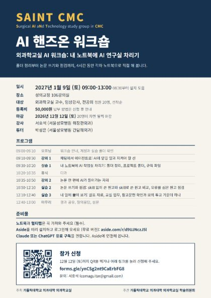
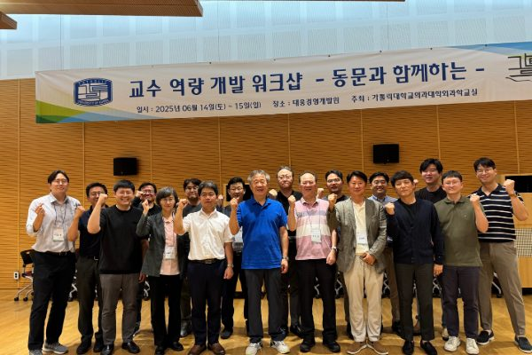
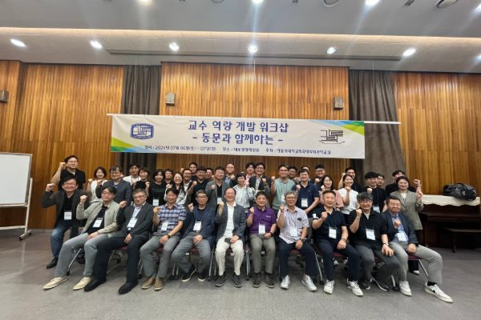
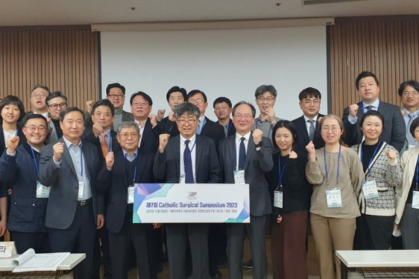
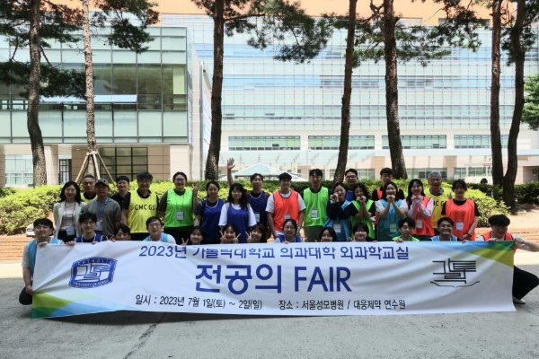
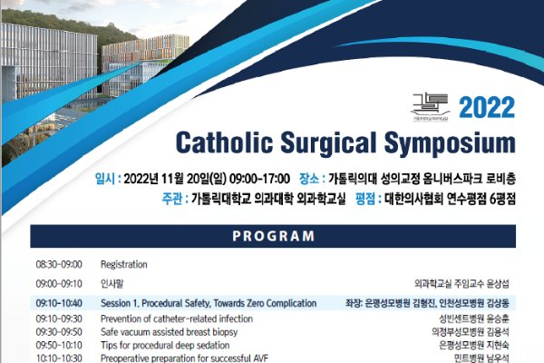

행사
행사 일정
외과학교실이 여는 학술행사와 교육 행사를 안내합니다. 지난 Catholic Surgical Symposium(CSS)은 CSS 탭에서, 전공의 FAIR는 전공의 FAIR 탭에서, 교수 역량 개발 워크숍은 교수 워크숍 탭에서, 2015–2021년 교실 행사는 행사 사진 탭에서 볼 수 있습니다.
예정된 행사
외과학교실 AI 핸즈온 워크숍
내 노트북에 AI 연구실 차리기. 폴더 정리부터 논문 쓰기와 점검까지, 4시간 동안 각자 노트북으로 직접 해 봅니다.
- 일시
- 2027년 1월 9일(토) 09:00–13:00 (08:30부터 설치 도움)
- 장소
- 가톨릭대학교 성의교정 106강의실
- 대상
- 외과학교실 교수, 임상강사, 전공의 (정원 20명, 선착순)
- 등록비
- 50,000원 (납부 방법은 신청 후 안내)
- 신청
- 2026년 12월 12일(토)까지, 20명이 차면 일찍 마감
- 강사
- 서호석 (서울성모병원 위장관외과)
- 프로그램
- 09:00–09:10 오프닝 워크숍 안내, 계정과 실습 폴더 확인
- 09:10–09:30 강의 1 채팅에서 에이전트로: AI에 맡길 일과 지켜야 할 선
- 09:30–10:20 실습 1 내 노트북에 AI 작업실 차리기: 폴더 정리, 프로젝트 폴더, 규칙 파일
- 10:20–10:35 휴식 다과
- 10:35–10:50 강의 2 논문 한 편에 AI가 들어가는 자리
- 10:50–12:10 실습 2 논문 쓰기와 점검: skill 없이 쓴 원고와 skill로 쓴 원고 비교, 오류를 심은 원고 점검
- 12:10–12:40 실습 3 내 일에 붙여 보기: 발표 자료, 교실 업무, 참고문헌 확인과 모의 투고 가운데 하나
- 12:40–13:00 마무리 결과 공유, 질의응답, 설문
- 준비물
- 노트북과 멀티탭 (필수)
- Aside를 미리 설치하고 로그인해 오세요 (무료 버전): aside.com/r/d9UJNczJ5l
- Claude 또는 ChatGPT 유료 구독을 권합니다. Aside에 연결해 씁니다.
- 주최
- 가톨릭대학교 의과대학 외과학교실
- 주관
- 외과학교실 학술위원회


다른 행사
- 2027 Catholic Surgical Symposium: 날짜와 장소가 정해지면 이곳에 안내합니다.
- 신년하례식, 송년회 같은 동문회 행사는 외과동문회 홈페이지에서 안내합니다.
지난 행사
 2026 전공의 FAIR2026년 6월 13일(토)–14일(일)서울성모병원, 파주 원과호 펜션사진 보기
2026 전공의 FAIR2026년 6월 13일(토)–14일(일)서울성모병원, 파주 원과호 펜션사진 보기 2026 Catholic Surgical Symposium2026년 2월 21일(토)서울성모병원 지하1층 대강당프로그램과 사진 보기
2026 Catholic Surgical Symposium2026년 2월 21일(토)서울성모병원 지하1층 대강당프로그램과 사진 보기
2025 교수 역량 개발 워크숍2025년 6월 14일(토)–15일(일)대웅경영개발원사진 보기- 2025 Catholic Surgical Symposium2025년 2월 15일(토)가톨릭대학교 의과대학 성의회관 1층 마리아홀프로그램과 사진 보기

2024 교수 역량 개발 워크숍2024년 7월 6일(토)–7일(일)대웅경영개발원사진 보기
2023 Catholic Surgical Symposium2023년 12월 9일(토)서울성모병원 의생명산업연구원 1003호프로그램과 사진 보기
2023 전공의 FAIR2023년 7월 1일(토)–2일(일)서울성모병원, 대웅경영개발원프로그램과 사진 보기
2022 Catholic Surgical Symposium2022년 11월 20일(일)가톨릭대학교 성의교정 옴니버스파크 로비층프로그램 보기 지난 행사 사진 (2015–2021)신년하례식, 입국식·퇴국식, 정년퇴임식, 학술대회 수상 등 64개 행사옛 교실 홈페이지 사진사진 보기
지난 행사 사진 (2015–2021)신년하례식, 입국식·퇴국식, 정년퇴임식, 학술대회 수상 등 64개 행사옛 교실 홈페이지 사진사진 보기